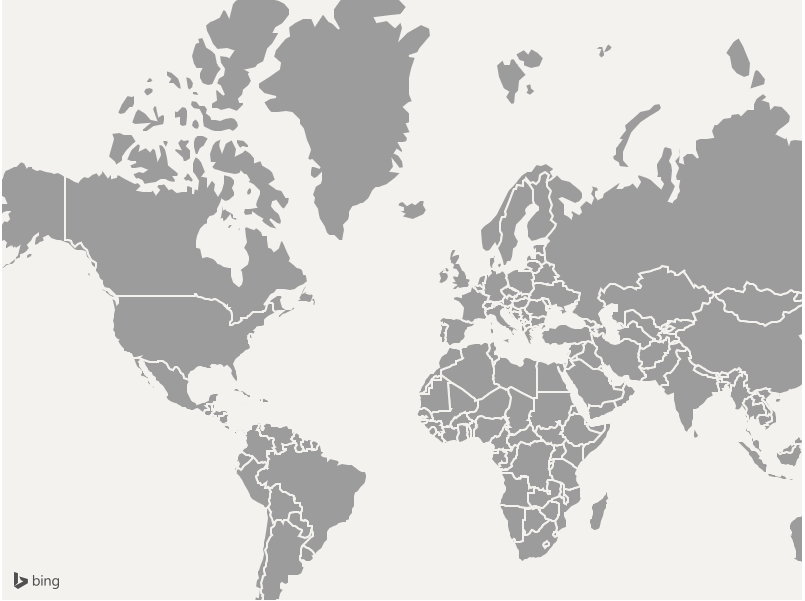

When displaying business intelligence data on the map it is often desirable to have a basic map style. Roads and labels on the maps can often be distracting when you simply what to see data on a map. Both Power View and Power Maps in Excel provide such a map style for this very reason. Bing Maps does not provide access to such a map style at this time so we have to come up with an alternative solution. There are a couple of different ways to accomplish this. The first method consists of creating a dynamic tile layer and adding it to the map. This method will provide the best performance but also requires the most work. A blog post on how to go about this approach can be found here. Another method is to simply remove the base map layer of the map and render polygons of country boundaries. This sample demonstrates the second method.
The sample will run without any changes being made, however an error message will appear above the map indicating that creaentials have not been provided for the map. To remove this create a Bing Maps key and insert it into the SimpleMap.js where it says "YOUR_BING_MAPS_KEY".
This sample will load in a set of country boundary data from a GeoJSON file by making use of the GeoJSON module for Bing Maps. Since this method renders the countries by drawing shapes on the map their are two side effects to be aware of;
Both of these side effects do not occur when using the tile layer method, however this is a trade off for the simplicity of this method. Here is a screenshot of the basic map style created using this method:
